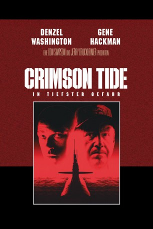

#1488 Crimson Tide - In tiefster Gefahr
Alternativ: Crimson Tide
Auszeichnungen: für 3 Oscars nominiert
 
 IMDB-Wertung: 7.3 / 10
IMDB-Wertung: 7.3 / 10  Metascore: 66
Metascore: 66 
Russische Nationalisten haben eine Abschussbasis für Nuklearraketen in ihre Gewalt gebracht. Captain Frank Ramsey (Gene Hackman), Kapitän eines US-Atom-U-Bootes, erhält per Funk den Befehl zum nuklearen Präventivschlag. Eine darauffolgende Nachricht kann nicht dechiffriert werden. Ramseys Erster Offizier (Denzel Washington) ist deshalb gegen den Raketenabschuss.
Jahr: 1995
Dauer: 116 Minuten
FSK: 12
Land: USA Studio: Buena Vista PicturesTonspuren: DTS - ,
Untertitel: Deutsch,
Auflösung: 1080p (1920x800) Größe: 9922 MB
Genre: Action, Drama, Thriller
Regisseur:  Tony Scott
Tony Scott
Drehbuch: Michael Schiffer, Richard P. Henrick, Michael Schiffer
Soundtrack: Hans Zimmer
Darsteller:
Datei: X:\1995\Crimson Tide - In tiefster Gefahr (1995, FSK12, 1920x800).mkv seit 10.07.2015
Festplatte: HD 1992-1995
 Es gibt insgesamt 85 Filme in der Gruppe '1995'
Es gibt insgesamt 85 Filme in der Gruppe '1995'